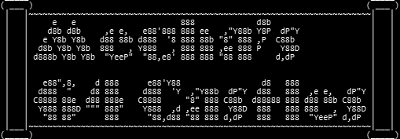
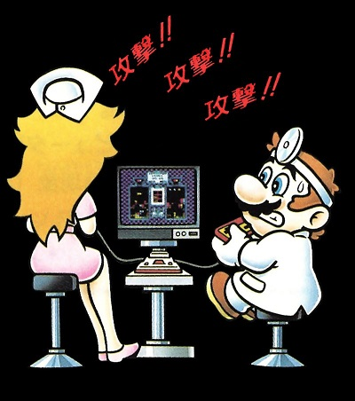
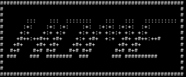

For real this time.. (Hint: It's a reference to the 'About me' page.) I suppose I could be considered a Mario fan, despite being very uninvolved with the online fandom for good reason, but I want to broaden the scope here, and not come off crotchety on the pages where I'm passionate in a positive way. Here's where I'm at 2026 onward:
I haven't been a 'Nintendo fan' since the WiiU's serious albeit temporary damage to the brand. The Nintendo Switch renewed my waning interest in Mario at least, but the cracks were showing. Actually.. if you're a true OG Nintendo person, the company hasn't changed their core principles of wanting to control everything since they entered the video game market. Tired of them being litigious? Well they were doing everything they could to stop piracy on the NES and for several console generations onward. What about censorship? People used to complain about that when discussing older games. I remember, but I guess that's now in style? I think what confuses people about them and Japanese companies in general is that they were blasé and distinct to Western companies. Gaming is super homogenized now outside of the smallest projects- and even those can unfortunately pick up the fleas of the AAA industry. Did you think this was a Nintendo rant? No, it's a modern gaming one.
I believe that Nintendo has great talent and has created masterpieces I'm still discovering or revisiting (like here.) Outside of that, I'm only really supporting Nintendo via my online subscription, and even that's partially because that's the only way I'm connected to a few acquaintances. I can't see handing them money for any thing else. Will I never ever touch these newer games? I won't say that, but I'm tired of the lack of creativity, laziness, greediness, derivative content (reissues, remasters, re-whatevers) that they think they can get away with because much of the audience wasn't born yet, not 'truly' owning content anymore, online markets ('ensh*ttification'), politics and social issues invading every single thing, and the dearth of community spaces that that aren't Reddit or Discord. The slow boil is too much!
In the meantime, I'll be checking out all of those gems I missed and doing what else I do best. You know, autistically analyzing random stuff, working on supplementary material for my works, and else. Look for new articles on that.
